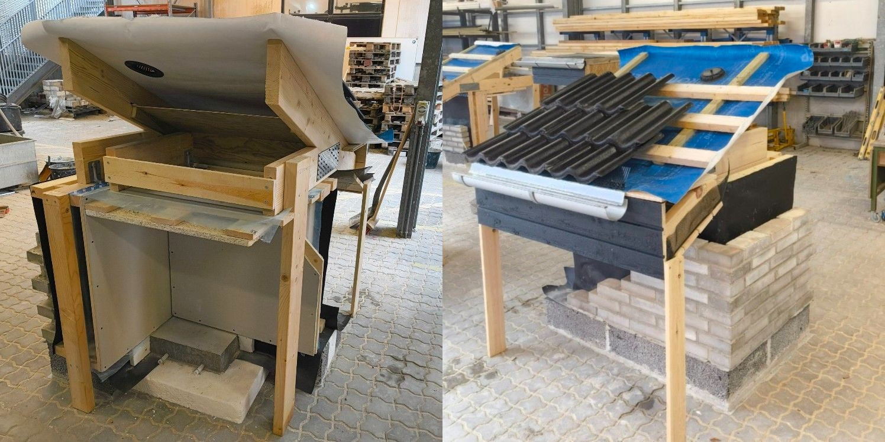
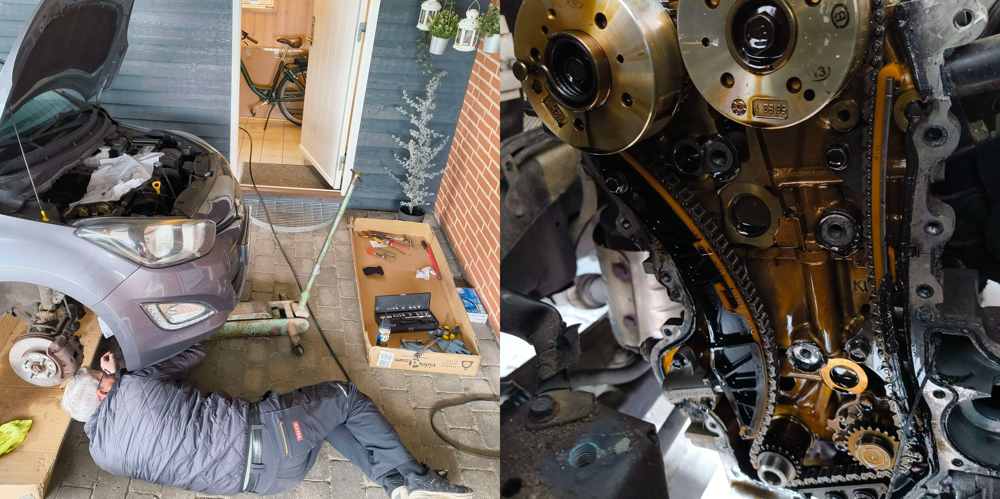
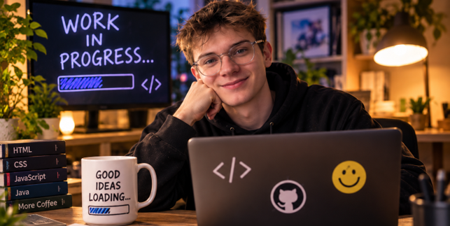
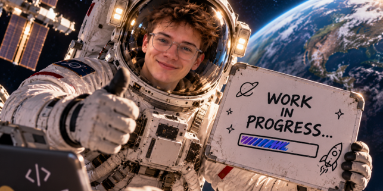

Project 1
During my Building A project in high school, I worked on constructing part of a house. I got hands-on experience with planning, measuring and using different tools and materials. It was a practical project where I learned how different parts of a building are constructed and how important precision and teamwork are.

Project 2
One of the bigger projects I have worked on myself was changing the timing chain on my car. It was a challenging job that required patience, precision and a good understanding of how the engine works. I did most of the work myself but got some help from my dad and his tools. It was a great learning experience for me.

Project 3
Lucas has unfortunalety not made that many projects, but here is a box that will show how the website would look with more projects.
Project 4
Lucas has unfortunalety not made that many projects, but here is a box that will show how the website would look with more projects.
Project 5
Lucas has unfortunalety not made that many projects, but here is a box that will show how the website would look with more projects.

Project 6
Lucas has unfortunalety not made that many projects, but here is a box that will show how the website would look with more projects.
Project 7
Lucas has unfortunalety not made that many projects, but here is a box that will show how the website would look with more projects.